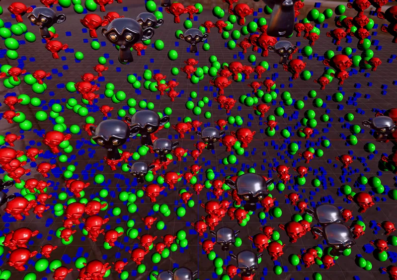

3D > Optimization > LOD
Mesh Multi-Material CPU LOD - RedGPU WebGPU Example
CPU-driven LOD switching both geometry and material on individual Meshes.
개별 Mesh에서 거리에 따라 지오메트리와 재질을 함께 전환하는 CPU LOD입니다.

3D > Optimization > LOD
CPU-driven LOD switching both geometry and material on individual Meshes.
개별 Mesh에서 거리에 따라 지오메트리와 재질을 함께 전환하는 CPU LOD입니다.
